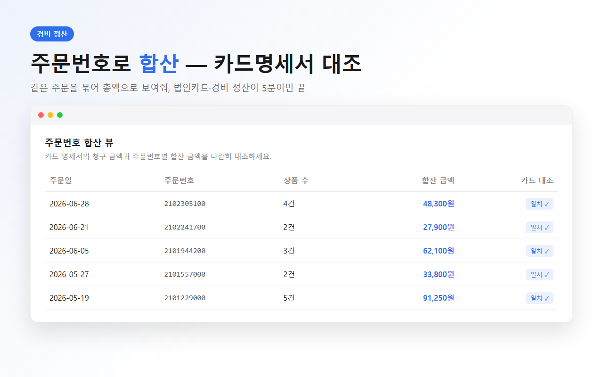
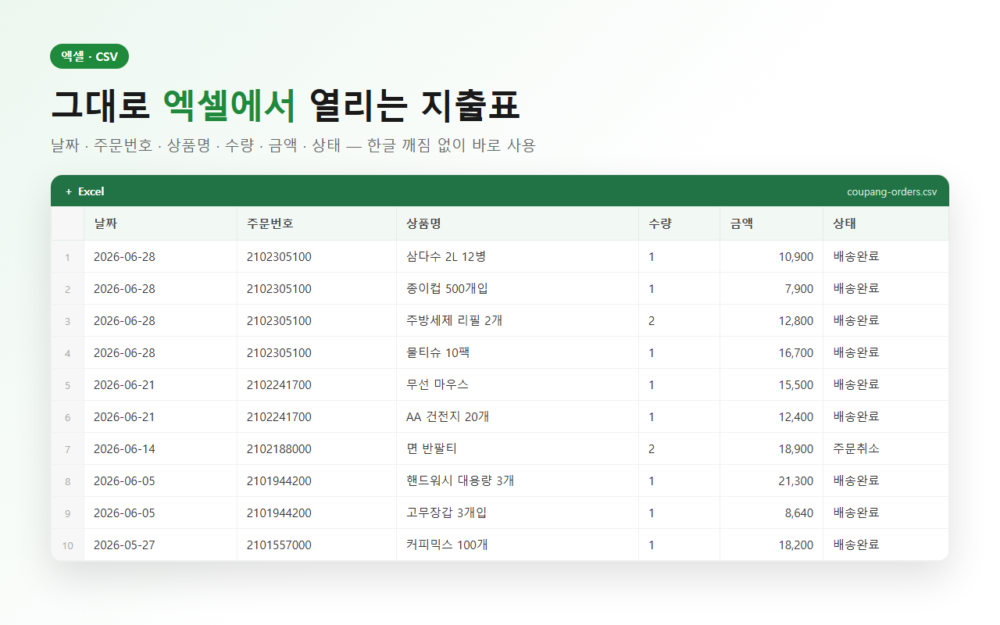

회사에서 비품을 쿠팡으로 산다. 사무용품, 커피, 물티슈… 웬만한 건 쿠팡이 제일 빠르니까. 문제는 매달 말 경비 정산할 때다.
법인카드 명세서에는 "쿠팡 48,300원" 이렇게 주문 단위 금액으로 찍힌다. 근데 쿠팡 주문 하나에는 상품이 여러 개 들어있다. 그래서 카드 청구액이랑 주문을 맞추려면, 주문에 담긴 상품 금액을 일일이 더해서 대조해야 한다. 이게 은근히 노가다다.
이 노가다가 싫어서, 주문내역을 뽑을 때 같은 주문번호끼리 금액을 자동으로 합산하게 만들었다. 그러면 카드 명세서의 청구 금액이랑 주문번호별 합산 금액을 한 줄씩 나란히 맞추기만 하면 된다.

여기에 CSV로 내보내면 회계팀에 제출할 엑셀도 바로 만들어진다. 날짜·주문번호·상품명·수량·금액·상태가 다 들어있어서, 증빙용으로도 충분하다.

정산이 귀찮은 건 금액이 커서가 아니라, 숫자를 맞추는 손작업이 많아서다. 그 손작업만 없애면 월말이 편해진다.
| 상황 | 왜 편해지나 |
|---|---|
| 법인카드로 쿠팡 비품 구매 | 주문번호 합산으로 카드 청구액 즉시 대조 |
| 자영업 경비 처리 | 기간별 주문내역 엑셀로 한 번에 정리 |
| 매달 반복 정산 | 버튼 한 번이라 월말 루틴이 짧아짐 |
회사 구매 내역이라 더 민감할 수 있는데, 이 확장은 주문 데이터를 서버로 안 보낸다. 전부 본인 브라우저에만 저장되고, 쿠팡 계정엔 아무것도 안 쓰는 읽기 전용이다. 회사 PC에서 써도 부담이 적다.
매달 카드 명세서 붙잡고 쿠팡 주문 맞추느라 시간 쓰는 분이라면, 한 번 써보고 판단해보길.
#법인카드쿠팡 #쿠팡경비정산 #쿠팡주문내역엑셀 #경비처리 #자영업 #쿠팡영수증 #쿠팡가계부 #세금계산서 #1인개발